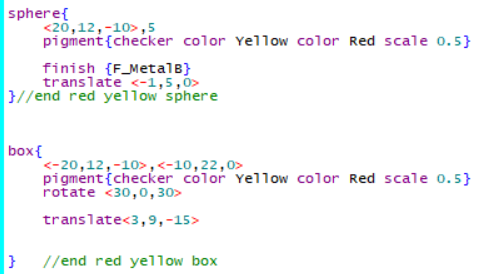

Welcome to the POV-Ray Compendium!
This website is here to show some tips and tricks about the Persistence of Vision Ray Tracer, or POV-Ray for short. POV-Ray was first made in 1991, and has continued to receive updates and new versions until 2021.
What is Ray Tracing?
According to NVIDIA's Site,
Ray tracing is a rendering technique that can realistically simulate the lighting of a scene and its objects by rendering physically accurate reflections, refractions, shadows, and indirect lighting.
Raytracing is a huge innovation that makes rendering much more realistic scenes possible. On the right, you can see an example of raytraced reflections, shadows and glass. POV-Ray allows you to use SDL (Scene Description Language) to create renders. Some SDL is shown below:

More to come later!